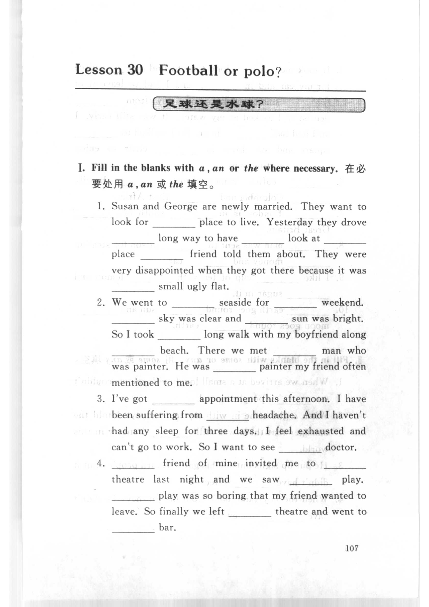
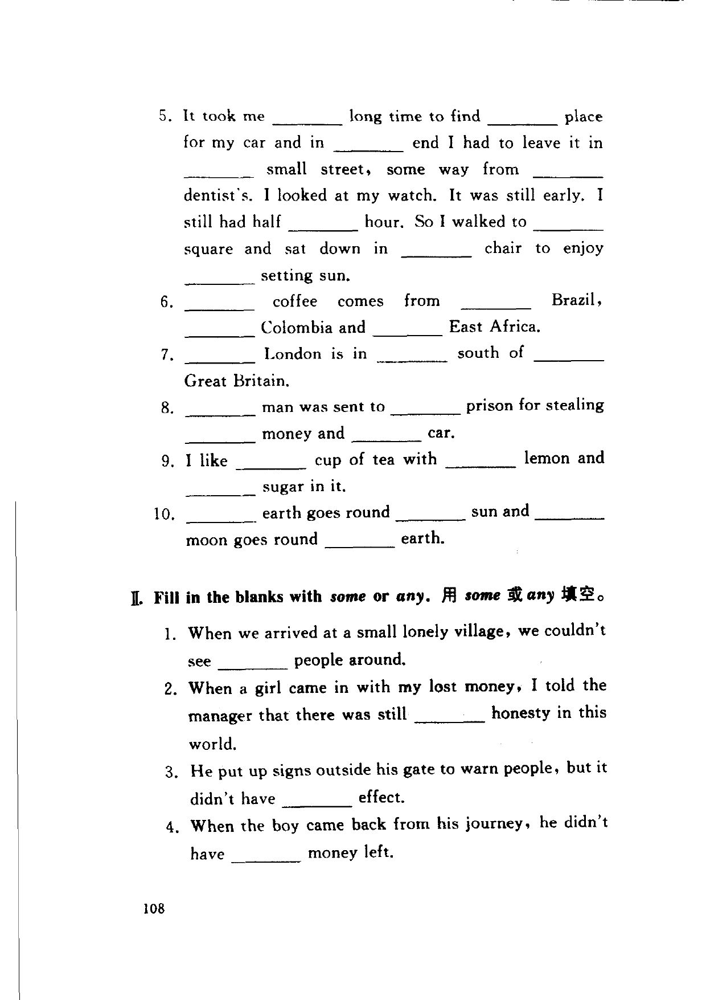
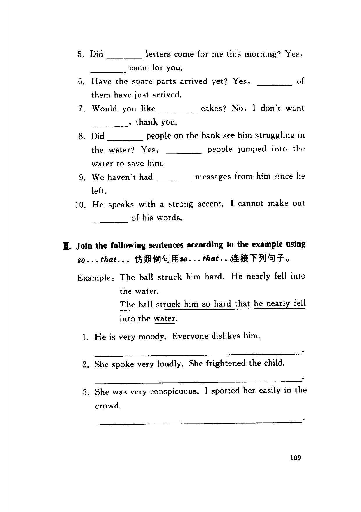
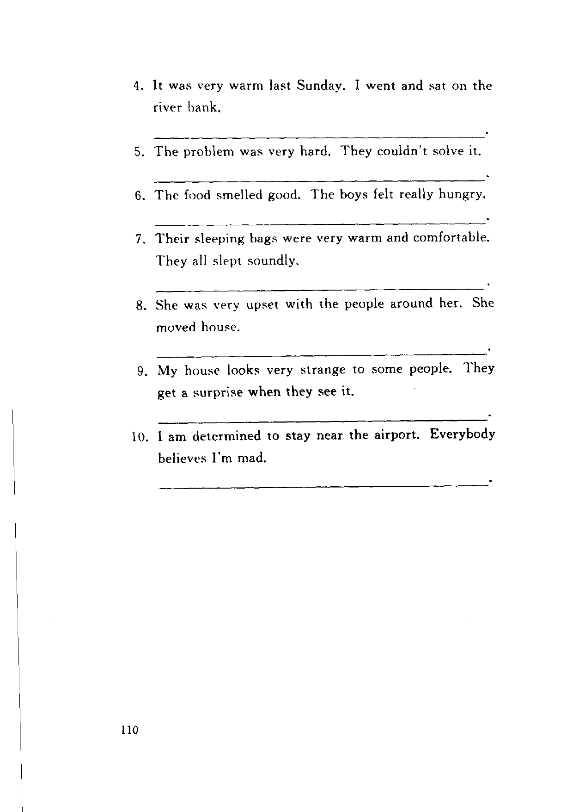

Grammar exercises · 语法练习
I. Fill in the blanks with a, an or the where necessary.
在必要处用 a, an 或 the 填空。
-
I. Articles — Susan and George are newly married. They want to look for place to live. Yesterday they drove long way to have look at place friend told them about. They were very disappointed when they got there because it was small ugly flat.
-
I. Articles — We went to seaside for weekend. sky was clear and sun was bright. So I took long walk with my boyfriend along beach. There we met man who was painter. He was painter my friend often mentioned to me.
-
I. Articles — I've got appointment this afternoon. I have been suffering from headache. And I haven't had any sleep for three days. I feel exhausted and can't go to work. So I want to see doctor.
-
I. Articles — friend of mine invited me to theatre last night and we saw play. play was so boring that my friend wanted to leave. So finally we left theatre and went to bar.
-
I. Articles — It took me long time to find place for my car and in end I had to leave it in small street, some way from dentist's. I looked at my watch. It was still early. I still had half hour. So I walked to square and sat down in chair to enjoy setting sun.
-
I. Articles — coffee comes from Brazil, Colombia and East Africa.
-
I. Articles — London is in south of Great Britain.
-
I. Articles — man was sent to prison for stealing money and car.
-
I. Articles — I like cup of tea with lemon and sugar in it.
-
I. Articles — earth goes round sun and moon goes round earth.
II. Fill in the blanks with some or any.
用 some 或 any 填空。
-
II. some / any — When we arrived at a small lonely village, we couldn't see people around.
-
II. some / any — When a girl came in with my lost money, I told the manager that there was still honesty in this world.
-
II. some / any — He put up signs outside his gate to warn people, but it didn't have effect.
-
II. some / any — When the boy came back from his journey, he didn't have money left.
-
II. some / any — Did letters come for me this morning? Yes, came for you.
-
II. some / any — Have the spare parts arrived yet? Yes, of them have just arrived.
-
II. some / any — Would you like cakes? No, I don't want , thank you.
-
II. some / any — Did people on the bank see him struggling in the water? Yes, people jumped into the water to save him.
-
II. some / any — We haven't had messages from him since he left.
-
II. some / any — He speaks with a strong accent. I cannot make out of his words.
III. Join the following sentences according to the example using so...that...
仿照例句用 so...that... 连接下列句子。
Example: The ball struck him hard. He nearly fell into the water.
The ball struck him so hard that he nearly fell into the water.
-
III. so...that — He is very moody. Everyone dislikes him.
-
III. so...that — She spoke very loudly. She frightened the child.
-
III. so...that — She was very conspicuous. I spotted her easily in the crowd.
-
III. so...that — It was very warm last Sunday. I went and sat on the river bank.
-
III. so...that — The problem was very hard. They couldn't solve it.
-
III. so...that — The food smelled good. The boys felt really hungry.
-
III. so...that — Their sleeping bags were very warm and comfortable. They all slept soundly.
-
III. so...that — She was very upset with the people around her. She moved house.
-
III. so...that — My house looks very strange to some people. They get a surprise when they see it.
-
III. so...that — I am determined to stay near the airport. Everybody believes I'm mad.
Original images · 原图对照
Expand a page to compare it with the transcription. Open the original in a new tab to zoom in.
展开原图核对文字，也可以在新标签页打开原图放大查看。
Book page 107 · Exercise I (articles, items 1–4)
Open original · 打开原图 ↗ Download original · 下载原图


Book page 108 · Exercise I (articles, items 5–10) and Exercise II (some or any, items 1–4)
Open original · 打开原图 ↗ Download original · 下载原图


Book page 109 · Exercise II (some or any, items 5–10) and Exercise III (so...that, items 1–3)
Open original · 打开原图 ↗ Download original · 下载原图


Book page 110 · Exercise III (so...that, items 4–10)
Open original · 打开原图 ↗ Download original · 下载原图


Your notes and answers
Use this space for longer responses or exercises that do not have an individual answer box.